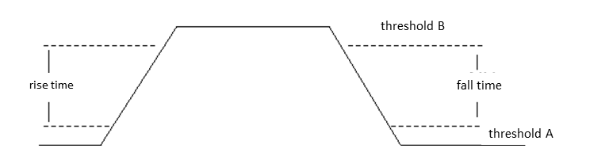

RiseFallTime
This test method measures the rise time and the fall time between the two specified thresholds with TMU.
The measurement needs one arming and a setup with two level thresholds. The pattern is executed twice with the two different level thresholds. The rise time and the fall time are calculated from the subtraction of the two execution results. This is indicated in the following figure:

If you want to measure the rise time or the fall time only, you need to copy the
source code to your own test method, change the edge type from TMU::RISE_FALL
to TMU::RISE or TMU::FALL with
TMU_PINS.setEdgeSelect() and remove the code that handles the edge not to be
measured. The valid prescaler value for rise time or fall time measurement (as derived from the
datarate parameter) is an integer from 1 to 17.
Parameter |
Type |
Description |
|---|---|---|
pins |
PinString |
The digital pin(s) or pin group(s) to be measured. |
datarate [Mbps] |
int |
The maximum expected data rate of the signal in the unit [Mbps]. |
prescaler |
int |
The prescaler of the measurement. It can be an integer from 2 to 16. Default is 2. |
samples_per_meas |
int |
The number of samples to be taken in each measurement. |
threshold_a [V] |
double |
The threshold voltage of the first shot in unit [V]. Default is 0.25. |
threshold_b [V] |
double |
The threshold voltage of the second shot in unit [V]. Default is 1.25. |
initial_discard |
int |
The number of events to discard before after arming. Default is 0. |
initial_sample_discard |
int |
The number of events to be discarded between two samples. Default is 0. |
exit if TMU has not finished |
int |
The flag to control whether the test method exits without uploading the results when the TMU has not finished the measurement. It can be: 0: Upload the results or 1: Do not upload the results Default is 0. |
wait timeout [s] |
double |
The time to wait for the TMU to finish the measurement. The default value is 1e-6. The time depends on how long the TMU will run. |
ftstResult |
int |
The flag indicating whether the functional test result is taken in account of the final pass/fail result. It can be: 0: do not include the functional test result. 1: include the functional test result Default is 1. |
output |
string |
Whether to output the message to UI report window. It can be: None: do not output to UI report. ReportUI: output to UI report. Default is None. |
testName Rise |
string |
The test names used for rise time measurement. Default is (minRise,maxRise,meanRise). |
testName Fall |
string |
The test names used for fall time measurement. Default is (minFall,maxFall,meanFall). |
minFallValue |
The pass range of the minimum fall time. |
maxFallValue |
The pass range of the maximum fall time |
meanFallValue |
The pass range of the mean fall time |
minRiseValue |
The pass range of the minimum rise time |
maxRiseValue |
The pass range of the maximum rise time |
meanRiseValue |
The pass range of the mean rise time |
Implementation pseudo code
IF not connected THEN connect DUT ENDIF Setup TMU with specified parameters Execute TMU measurement Upload raw data of two shots Calculate rise time and fall time from raw data Judge and log measurement result Judge and log functional test result if specified
Functional changes
- Introduced in SmarTest 7.1.1
- SmarTest 7.1.3: New parameter exit if TMU has not finished and wait timeout[s] with TML 2.1.5 in SmarTest 7.1.3.2.